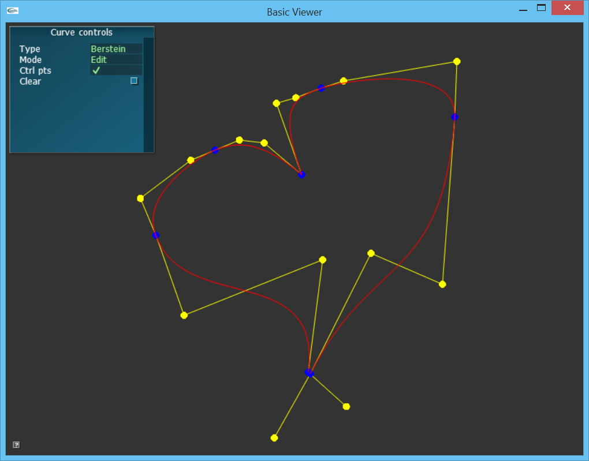

Assignment 3: The Catmull-ROM COM
In which, we build a curve editor for Catmull-Rom and Hermite splines
Due Friday, Oct 1, before midnight
The goals of this lab are to
-
Implement Catmull-Rom splines
-
Implement Hermite splines
-
Implement an interactive spline editor

User interface
The basecode includes a simple UI to help you test your splines.
-
Blue points represent the input data (aka keys) which are interpolated between.
-
Yellow points represent additional control points
The UI panel contains widgets for
-
Type: interpolation type (You will implement Linear, Catmull-Rom, and Hermite
-
Mode: how left mouse clicks are interpreted:
-
Add: append points to the curve
-
Edit: drag curve points (blue) and control points (yellow) using the
-
Delete: remove curve points (blue)
-
-
Ctrl pts: toggle the display of control points (yellow)
-
Clear: remove the entire curve.
Implementation overview
Question: allow students to design their own, or give them a design? For this assignment you will implement
Get the source
On Github, do a Fetch Upstream to synchronize your forked repository with the class repository.
Then update the source on your local machine and rebuild.
> git pull
> cd build
> cmake ..; make1. Linear splines
Implement a spline capable of performing linear interpolation.
TODO: Test program to ensure that it works
2. Catmull-ROM splines
Implement a catmull-rom spline.
3. Hermite spline
4. Curve editor
<p><b>Part 2</b>. To start, the viewer should draw your keys but not the curve between them. To see your curve, implement the method <b>ACurveeditor::drawCurve</b> in <b>ACurveEditor.cpp</b>. Draw the spline similarly to how your drew your curves from the last assignment.
<br> <br> <hr> <h3>Question 2: Catmull-Rom interpolator (20 points)</h3> <hr>
<p>This question has multiple parts.
<p><b>Part 1 (10 points)</b> For this part, modify the code in <b>AInterpolator-basecode.cpp (libsrc/animation)</b> to implement <b>AInterpolatorCatmullRom::computeControlPoints</b>. For each segment, you should set b0, b1, b2, and b3 (in this order). Check the output of <b>testCatmullRom.cpp</b> to check whether your implementation gives the same results as our example from class.
<p>To run your program from the <b>build</b> directory, type <pre class="prettyprint lang-sh"> build> ../bin/a3-testCatmullRom </pre> </p>
<p><b>Part 2 (10 points)</b>. For this part, modify the code in <b>AInterpolator-basecode.cpp (libsrc/animation)</b> to implement <b>AInterpolatorCatmullRom::interpolate</b>. You can use any method (Bernstein functions or de Casteljau’s algorithm) to interpolate the segment. Check the output using the viewer.
<p>To run from the <b>build</b> directory, type <pre class="prettyprint lang-sh"> build> ../bin/a3-curveEditor </pre> </p>
<br> <br> <hr> <h3>Question 3: Hermite interpolator (20 points)</h3> <hr> <p>This question has multiple parts.
<p><b>Part 1 (10 points)</b>. Modify the code in <b>AInterpolator-basecode.cpp (libsrc/animation)</b> to implement <b>AInterpolatorHermite::computeControlPoints</b>. For each input key p<sub>i</sub>, you should set p<sub>i</sub> and p'<sub>i</sub> as control points (in that order). Check the output of <b>testHermite.cpp</b> to check whether your implementation gives the same results as our example from class.
<p>To run your program from the <b>build</b> directory, type <pre class="prettyprint lang-sh"> build> ../bin/a3-testHermite </pre> </p>
<p><b>Part 2 (10 points)</b> Modify the code in <b>AInterpolator-basecode.cpp (libsrc/animation)</b> to implement <b>AInterpolatorHermite::interpolate</b>. You should use the Hermite form of the cubic bezier curve to interpolate. Check the output using the viewer.
<p>To run from the <b>build</b> directory, type <pre class="prettyprint lang-sh"> build> ../bin/a3-curveEditor </pre> </p>
<br> <br> <hr> <h3>Question 4: Animate the dot (5 points)</h3> <hr> <p>In <b>ACurveEditor::update()</b>, use your spline to animate a dot so it moves along the spline. The basecode in ACurveEditor has a member variable <b>mDot</b> with type AVector3. Update the value of mDot.
<br> <br> <img src="dot.gif"> <br>
<hr> <h2>Extra Credit (Up to 2 points)</h2> <hr>
<p><b>Option 1</b>Improve ASpline::computeSegment. This method uses linear search to find the interval containing time. Replace the implementation to use binary search.
<p><b>Option 2</b> Now that your framework supports splines, try to make an interesting demo based on that. Some ideas
<ul> <li>Try animating the control points.</li> <li>Try interpolating between curves.</li> <li>Try animating an object’s position/color/etc based on a spline.</li> </ul>
<br> <img src="balls.gif"> <br>
<p><b>Option 3</b> Implement your own interpolator type!
<br> <hr> <h2>Submission Requirements (1 points)</h2> <hr>
<div id="submission"></div>
<div id="footer" style="font-size: 8pt; color: rgb(119, 119, 119);text-align:right;"> </div>
</body> </html>